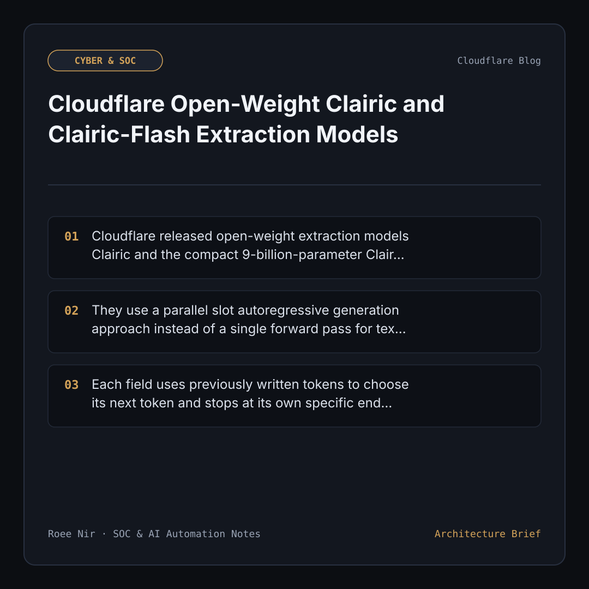

MANUAL PUBLISH PACK · Never auto-posted to LinkedIn without your click.
1. Visual Card (1080x1080)

2. פוסט מוכן + תגובה ראשונה
האם חילוץ נתונים ממסמכים מובנים ולא מובנים דורש תמיד הרצת מודל ענק ויקר? השבוע הודיע צוות הבינה המלאכותית של Cloudflare על השקת גרסאות פתוחות משקל של מודלי החילוץ שלהם, הכוללים את Clairic המעודכן ואת Clairic-flash בקבצים קומפקטיים של 9 מיליארד פרמטרים. מה שמיוחד בגרסה הזו הוא השינוי המבני באופן שבו המודל מטפל בשדות טקסט ומספרים מורכבים כמו תמונות קבלות וקובצי PDF. במקום להסתמך על מעבר קדימה בודד, המודל משתמש בשיטת יצירה אוטורגרסיבית מקבילית של חריצים. מתחת למכסה המנוע, כל שדה נתונים משתמש בטוקנים שכבר נכתבו כדי לבחור את הטוקן הבא שלו, ועוצר באופן עצמאי כשהוא מגיע לסימן הסיום הייעודי שלו. כל השדות מתקדמים יחד באותו אצווה ומאפשרים שמירה על השהיה נמוכה במיוחד לצד דיוק מוגבר בחילוץ מידע רגיש. זה לא אומר שמודלי ענק כלליים הולכים להיעלם מחר מהענן. אבל זו בהחלט התקדמות משמעותית ביעילות של מודלים מותאמים למשימות ספציפיות. הסיפור הגדול כאן הוא המעבר לארכיטקטורות קומפקטיות וייעודיות שרצות מקצה הענן ומספקות ביצועים מהירים בלי לשבור את התקציב. איזה אתגרי חילוץ נתונים יש לכם במערכות האבטחה והניטור כיום? #Cloudflare #AIModels #DataExtraction #CloudSecurity #WorkersAI #MachineLearning
תגובה ראשונה (לשמירה על חשיפה אורגנית):
לקריאת המחקר והפירוט הטכני המלא מתוך Cloudflare Blog: https://blog.cloudflare.com/open-clairic/